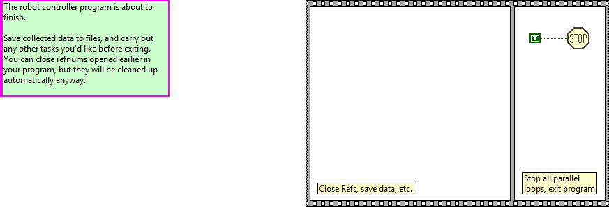

Finish.vi
This VI is called just before exiting. It is expected to close I/O refnum, save collected data, etc.
Connector Pane
Front Panel
Controls and Indicators
Block Diagram

List of SubVIs and Express VIs with Configuration Information
VI Revision History
"Finish.vi History"
Current Revision: 27
Position in Hierarchy

Iconified Cluster Constants